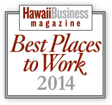

In 2014 HIC was recognized as a winner in the annual Best Places to Work in Hawaii by Hawaii Business Magazine. For four years in a row, we have continued to place in this popular contest against businesses in Hawaii, and we continue to remain on top due to our flexible schedules, fantastic benefits and happy employees.